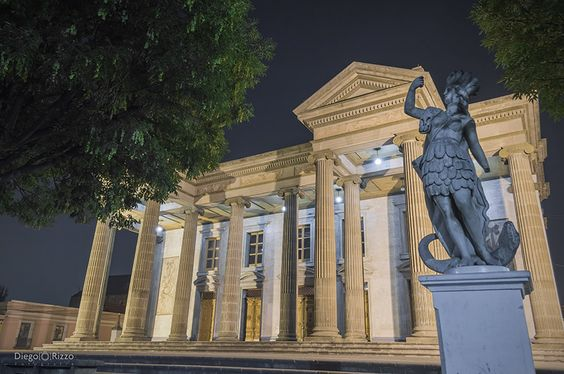

Teatro Municipal de Quetzaltenango
Todo comenzó alrededor de 1889 cuando el presidente Manuel Estrada
Cabrera declaró la necesidad de construir un teatro en dicha localidad.
Esta decisión estuvo orientada por la iniciativa del jefe edil de ese entonces.
Fue así que se comenzaron a llevar a cabo todos los procesos correspondientes
para ejecutar la obra. Dos años después en 1890 se dio a
conocer las bases del contrato entre la comuna quetzalteca
y la constructora que estaría a cargo.
Tomando en cuenta lo establecido, el 14 de septiembre de 1891
se colocó la primera piedra de esta magna construcción.
No obstante, alrededor de 1893 los representantes de la constructora ya no continuaron con el contrato.
Debido a los inconvenientes se propuso al Concejo Municipal
mandar a traer a Europa un teatro de hierro, madera y papel
incombustible. La idea era que se ensamblara en Quetzaltenango, no obstante, tal propuesta no fue aceptada.
En su lugar, el 28 de julio de 1894 se efectuó un contrato entre el Comité
de Obras Públicas de la ciudad altense y la obra fue terminada por el
arquitecto Enrique Jones. El 19 de julio de 1895 se inauguró
el edificio pero sin fachada y con una compañía de ópera.
Esto debido a que utilizó varios elementos decorativos típicos
de la cultura francesa. Por ejemplo, columnas estriadas de modo corintio,
vanos adintelados, frontones triangulares, guirnaldas ornamentales, entre otros.
El entorno del teatro ha sido adornado con varios monumentos a lo largo del tiempo,
de ellos el que más se destaca es la estatua de Artemisa,
personaje de la mitología griega, diosa de la naturaleza, las cosechas y la caza.
